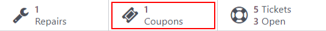
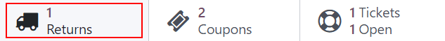
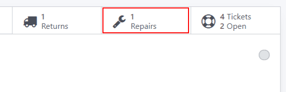
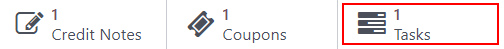

After-Sales services¶
After-Sales services can be configured in the Helpdesk application for individual teams. Once enabled, users can issue refunds, process returns, generate coupons, and/or schedule repair and field service interventions directly from a ticket.
Set up the after-sales services¶
Start by enabling the after-sales services on specific Helpdesk team(s), by going to and selecting which teams(s) these services should be active on. Then, scroll to the After-Sales section on the team’s settings page, and choose which of the following options to enable:
Refunds: issues credit notes to refund a customer, or adjust the remaining amount due
Coupons: offers discounts and free products through an existing coupon program
Returns: initiates a product return from a customer through a reverse transfer
Repairs: creates repair orders for broken or faulty products
Field Service: plans onsite intervention through the Field Service application

The services that are enabled can vary based on the type of support a team provides.¶
Warning
As all of the after-sales services in Odoo require integration with other applications, enabling any of them may result in the installation of additional modules or applications. Installing a new application on a One-App-Free database will trigger a 15-day trial. At the end of the trial, if a paid subscription has not been added to the database, it will no longer be accessible.
Issue a refund with a credit note¶
A credit note is a document issued to a customer informing them that they have been credited a certain amount of money. They can be used to provide a full refund to a customer, or to adjust any remaining amount due. While they are usually created through the Accounting or Invoicing applications, they can be created through a Helpdesk ticket, as well.
Note
Invoices must be posted before a credit note can be generated.
To create a credit note, navigate to a ticket on the application, and click the Refund button in the upper-left corner of the ticket dashboard. Then, select the corresponding invoice from the Invoices to Refund drop-down menu.
Choose a Credit Method from one of the following options:
Partial Refund: the credit note is created in draft and can be edited before being issued
Full Refund: the credit note is auto-validated and reconciled with the invoice. This is the option to choose if a validated invoice needs to be canceled
Full refund and new draft invoice: the credit note is auto-validated and reconciled with the invoice. The original invoice is duplicated as a new draft. This is the option to choose if a validated invoice needs to be modified
Important
The Credit Method options will not be available for invoices that have already been paid.
Make any necessary changes to the details of the credit note and click Reverse. Then click Confirm to post the credit note.
Once the credit note has been posted, a Credit Notes smart button will be added to the Helpdesk ticket.

See also
Generate coupons from a ticket¶
Coupons can be used to alter the price of products or orders. The usage constraints of a coupon are defined by conditional rules. Coupon Programs are configured in the Sales or Website applications.
Note
The eCommerce module must be installed in order to create coupon codes from the Website.
To generate a coupon, open a Helpdesk ticket and click on the Coupon button in the upper left corner. Select an option from the Coupon Program drop-down menu, then click Generate.

The Coupon Code can be copied directly from the pop-up window (by clicking the Copy button), or sent in an email by clicking Send.
Note
When emailing a coupon code, all the followers of the ticket will be added as recipients to the email. Additional recipients can be added to the email as well, in the Recipients field of the Compose Email pop-up window.

Once a Coupon Code has been generated, a Coupons smart button will be added to the top of the ticket; click the smart button to view the coupon code, expiration date, and additional information.
See also
Facilitate a product return with a reverse transfer¶
Returns are completed through reverse transfers, which generate new warehouse operations for the returning products. Click the Return button in the top-left corner of a ticket to open the Reverse Transfer pop-up window.

Note
The Return button only appears on a ticket if the customer has a recorded delivery in the database.
By default, the quantity will match the validated quantity from the delivery order. Update the Quantity field if necessary.

Click Return to confirm the return. This generates a new warehouse operation for the incoming returned product(s). A Return smart button will then be added to the top of the ticket.
See also
Send products for repair from a ticket¶
If the ticket is related to an issue with a faulty or broken product, a repair order can be created from the Helpdesk ticket, and managed through the Repairs application.
To create a new repair order, open a ticket and click on the Repair button in the upper left corner.
Clicking the Repair button opens a blank Repair Reference form.
Note
If a product was specified in the Product field on the ticket, it will be added to the Product to Repair field automatically. If not, click into the field to select a product from the drop down.
Fill out the Repair Description field with a brief explanation of the issue. Click the Sale Order field and then select the originating SO from which the product is being repaired from. If a return has been initiated for the product, select the reference number from the drop-down in the Return field.
Choose an Invoice Method from the drop-down. Select Before Repair or After Repair to generate an invoice before or after the work is completed. Selecting No Invoice means that an invoice cannot be generated for this service.
If parts are required for the repair, they can be added in the Parts tab. Services can be added as product lines on the Operations tab. Additional information for the internal repair team can be added to the Repair Notes tab. Information for the customer can be added to the Quotation Notes tab, and will be automatically added to the PDF of the quotations generated from this Repair Reference.
A Repairs smart button will be added to the ticket, linking to the repair order.
Note
Once a user creates a repair order from a Helpdesk ticket, they will be able to access it through the ticket’s Repair smart button, or from a link in the Chatter, even if they do not have access rights to the Repair application.
Create a field service task from a ticket¶
On-site interventions can be planned from a ticket and managed through the Field Service application. Customers with portal access will be able to track the progress of a Field Service task just as they would a Helpdesk ticket.
To create a new task, navigate to a ticket. Click Create Task to open the Create a Field Service task pop-up. Confirm or update the task Title.
Note
The Project field on the Create a Field Service task pop-up will default to the same Field Service project that was identified on the team’s settings page. To change the project for this specific task, select one from the Project field.
To change the default Field Service project for the team, go to to select a Team. Scroll to the After-Sales section and choose new project under Field Service.
Click Create Task or Create & View Task.

After the task is created, a Tasks smart button will be added to the ticket, linking the Field Service task to the ticket.
See also